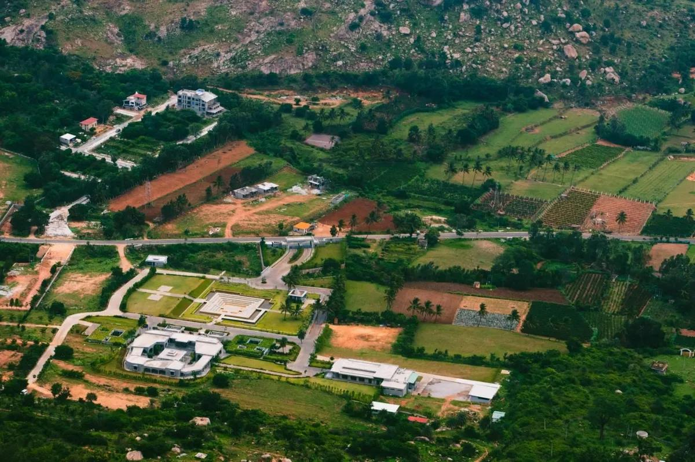
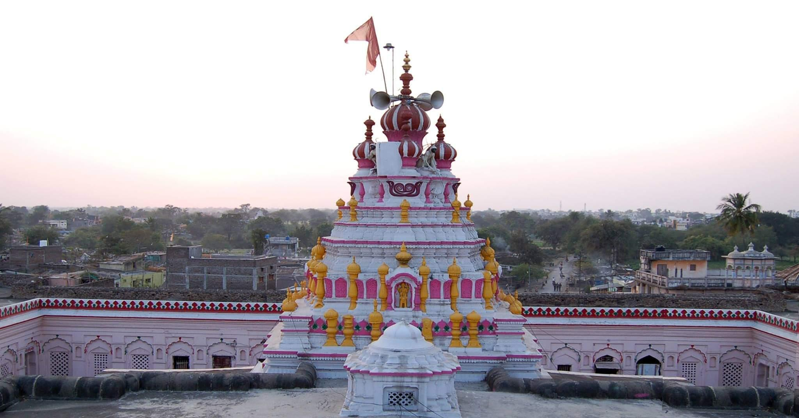
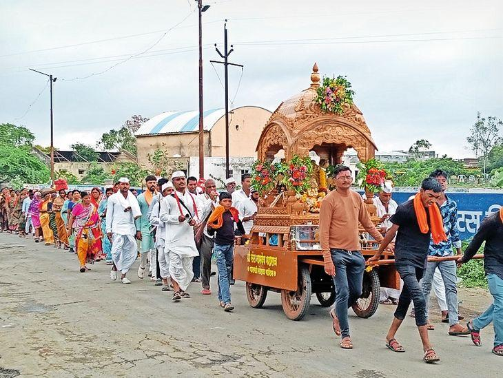
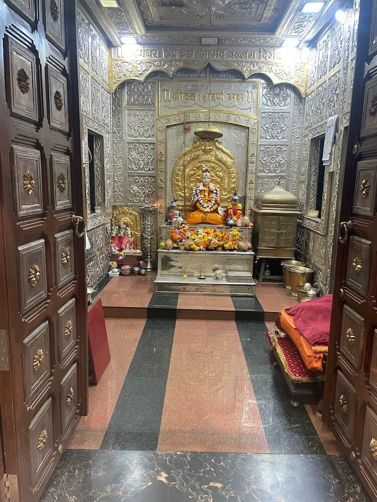
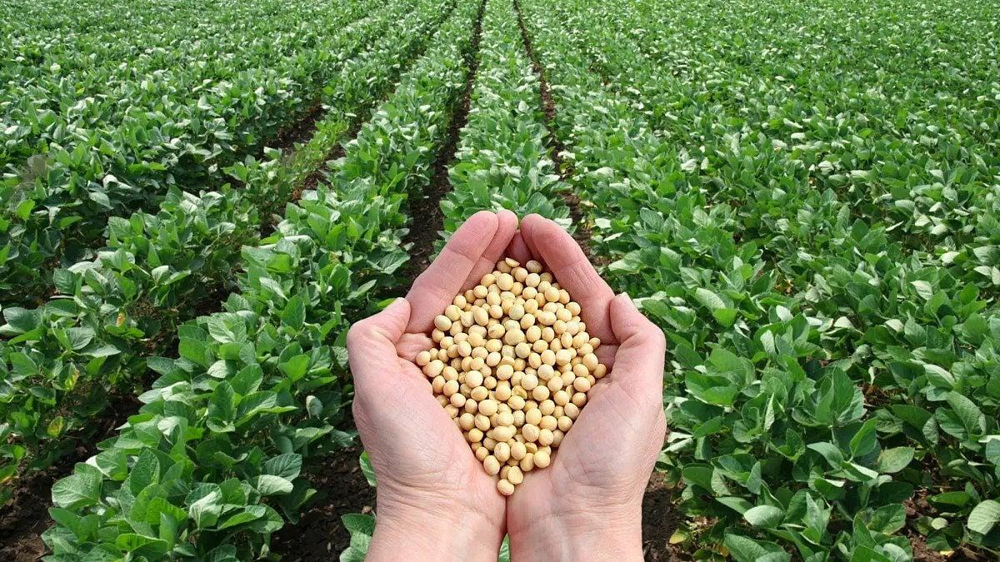
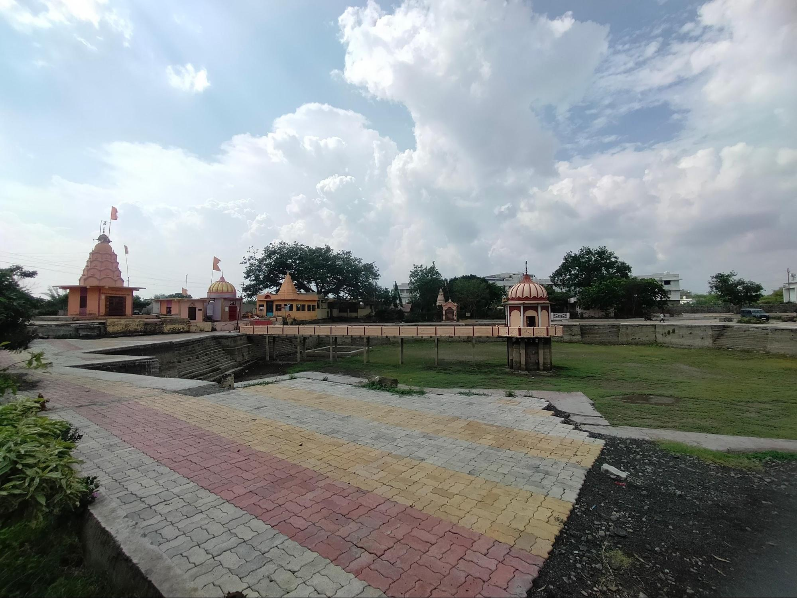
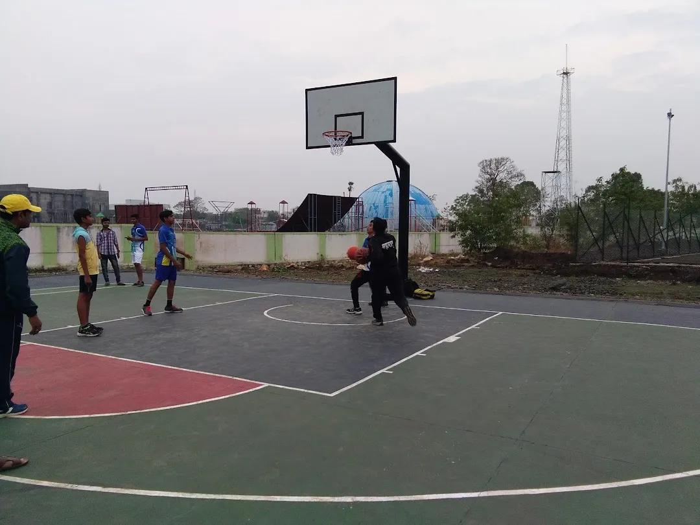

About

Historically known as Vatsagulma, Washim is one of the oldest cities in the state and serves as the administrative headquarters of the district. It is characterized by a blend of peaceful rural landscapes and bustling regional centers like Risod, Karanja, and Mangrul Pir. The district serves as a quiet retreat away from major metropolitan hubs while maintaining deep connections to Maharashtra's heritage.
- Location: Washim is located in the eastern region of Maharashtra, India, in the western part of the Vidarbha division.
- Famous as:It is famous as Vatsagulma, the ancient capital of the royal Vakataka Dynasty, and as a major spiritual hub known for its historic Balaji Temple.
History

The city of Washim was the illustrious capital of the Vakataka kingdom, which ruled a vast territory spanning from central India to the Deccan between the 3rd and 6th centuries. Over the centuries, it evolved into a major spiritual center. A notable historical landmark is the Balaji Temple, originally constructed in 1779 AD by Bhavani Kalu, an influential diwan during the Bhosle rule.
- Washim, anciently named Vatsagulma, served as the glorious 4th-century capital of the powerful Vakataka Dynasty. The city grew as a major spiritual and political hub under these Deccan rulers, who also helped create the famous Ajanta Caves. After centuries of shifting royal rule, the region was governed by the British as part of the Berar Province. Washim was later merged into the Akola district after India gained independence. Recognizing its growing size and administrative needs, the government officially carved it out as a separate, independent district on July 1, 1998.
Culture

Washim’s cultural ethos is a vibrant reflection of Vidarbha's traditions, steeped in devotion and community harmony. Major Hindu festivals like Ganesh Chaturthi, Diwali, and Gudi Padwa are celebrated with immense fervor, marked by colorful processions and community gatherings. The local population primarily speaks Marathi, with cultural narratives heavily intertwined with folklore, local art forms, and religious fairs.
- Main Festivals:Ganesh Chaturthi, Diwali, Holi, Gudi Padwa, and the annual Balaji Maharaj Yatra fair.
- Traditional Arts:Local Bhajan and Kirtan devotional music, standard Vidarbha folk dances, and traditional Kushti (wrestling).
- Language:Marathi is the primary spoken language, alongside Hindi and regional Vidarbhi dialects.
Tourism

The district is an emerging destination for spiritual and nature tourism, drawing visitors to revered sites like the ancient Balaji Temple and the historical Aundha Nagnath Temple. Nature and engineering enthusiasts also frequent the scenic Isapur Dam and the nearby Lower Pus Dam. For deep dives into what the area offers, check out Tripadvisor's Washim Tourism Guide.
- Shri Balaji Sansthan Mandir: A historic temple built in 1779 with a black stone deity and a sacred water tank.
- Padmatirth Tank: An ancient stepwell tank with a central island temple used for holy rituals.
- Isapur Dam: A massive earthfill dam on the Penganga River popular for birdwatching and scenic picnics.
Famous Food

The local cuisine is deeply rooted in traditional Vidarbha and Maharashtrian flavors, known for being robust and spicy. Staples include Jowar and Bajra rotis, paired with spicy lentil preparations like usal and patwadi. Visitors exploring the region can enjoy authentic local dining at spots like the Mh-37 Cafe & Restaurant or enjoy traditional road-side dining at highway eateries.
- Famous Food: Spiced Varadi Thali plattings featuring regional essentials like Shevga Bhaji (drumstick curry), Pithla Bhakri (gram flour porridge with sorghum flatbread), spicy Vada Pav, Tarri Poha, and fresh Aamras with Puran Poli during the summers.
- Local Specialty:Bittya (small, traditional steamed flour dough balls typically eaten with spicy eggplant curry or urad dal) and Patwadi Rassa (savory gram flour cubes simmered in a fiery, aromatic gravy).
Economy

The economy of Washim is predominantly agrarian, heavily dependent on the cultivation of crops like cotton, soybean, oilseeds, jowar, and pulses. Agro-based industries drive the industrial landscape, supported by numerous cotton processing and oil mills. The district is also part of a broader network of trade and development supported by the Department of Tourism Maharashtra.
- Key Industries:Cotton ginning mills, oilseed processing units, soybean oil extraction plants, and local agro-based small enterprises.
- Main Crops:Soybean, cotton, pigeon pea (tur), sorghum (jowar), green gram (mung), and chickpeas (harbhara).
Environment

Washim features a semi-arid, tropical climate with distinct hot summers and moderate winters. The district's environment is characterized by an undulating terrain and numerous natural and man-made water tanks, which help support local agriculture and birdlife. The region's geography highlights a delicate balance between rural agrarian ecosystems and the need for water conservation.
- Climate:A dry, semi-arid tropical climate featuring scorching summers with temperatures hitting up to 45°C to 48°C, and cool, pleasant winters.
- Key Rivers:The Penganga River (the principal river basin), alongside its major tributaries like the Kas, Adan, Arunavati, and Katepurna rivers.
- Protected Areas:The Karanja Sohol Wildlife Sanctuary, an 1,832-hectare reserved grassland ecosystem created specifically to protect the regional blackbuck population.
Sports

Much like the rest of Maharashtra, sports in Washim are deeply tied to traditional physical disciplines. Kho-Kho, Kabaddi, and wrestling (particularly traditional competitions like Maharashtra Kesari) are highly popular among the youth. Local community events and rural sports festivals often showcase the physical prowess and competitive spirit of the local athletes.
- Traditional Sports:Kabaddi, Kho-Kho, Kushti (traditional clay-pit wrestling), and local athletics.
- Focus:Grassroots talent development, school-level sports meets, and regional rural tournaments organized to scout young athletes for state-level competitions.